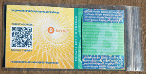

{kind=link}
In the most specific sense, a paper wallet is a document containing all of the data necessary to generate any number of Bitcoin private keys, forming a wallet of keys. However, people often use the term to mean any way of storing bitcoins offline as a physical document. This second definition also includes paper keys and redeemable codes. A paper key is a single key written on paper that is used multiple times like a wallet (this is strongly discouraged). A redeemable code is a single key intended to be funded and "redeemed" only once: these are commonly used for gifts and as part of physical Bitcoin coins/notes.
Storing bitcoins on paper wallets is not safe unless very strict security precautions are undertaken during their initial preparation. (See below.)
TOC
Use cases
Tips and gifts
By creating a keypair, one can store bitcoins on a physical medium to be left as a tip or a gift. The recipient then sweeps the private key to their own wallet.
Physical tokens
A trusted provider can hide the private key inside a tamper-resistant token, and issue them as a form of bitcoins. This requires those who accept it as payment to trust that when the provider produced the tokens, they loaded them with the correct amount of bitcoins, and that they have not been tampered with since then. To redeem the bitcoin value, the token must be destroyed to access the private key. Often a bitcoin address is embedded on the outside visible, but there is no guarantee (without destroying the token) that this matches the private key inside, or, even if it does, that the private key is not replicated on multiple tokens or saved by the producer.
Wallets
Proper paper wallets are often a very secure way of storing bitcoins, since they are not typically exposed to malware. They can also be easily stored securely in safes and safe deposit boxes. However, it may be more difficult to securely "backup" paper wallets, and due to the current sub-optimal software support, it may be easier to make a mistake that causes loss of bitcoins.
Sometimes people try to use single keys as true bitcoin wallets. However address reuse is very bad for privacy and security. Because of this, one is forced to choose between hazardous options:
- Use the key only once to receive, and only once to send the full amount. This requires the user to know the full amount he wants to store in advance, and often leads to the next situation:
- Create multiple keys. By using more than one key, the user can receive more than once using a different address each time, including using new addresses for change. This is very complicated, and makes it easy to accidentally reuse addresses, produce the wrong change/fee combination, lose some keys, spend hours searching for the right key, etc. Not even skilled bitcoin experts are comfortable managing their own keys manually like this.
Therefore, it is highly recommended that you use proper paper wallets which allow you to generate an infinite number of addresses from a single seed.
Encoding/formatting
 Proper, multi-key paper wallets usually take the form of a multi-word HD wallet seed mnemonic. The list of several words corresponds to some binary data that is used to generate all of the addresses. Words are used to make it easier to avoid and correct errors. Trying to memorize an entire seed mnemonic is very difficult and is generally not recommended.
{kind=link}
{kind=link}
A single key (for use in insecure single-key paper wallets or redeemable codes) can be represented in several formats, but typically the Wallet Import Format (WIF) is used, since keys represented that way are very short (51 characters) and thus easy to re-enter when importing or "sweeping" it for withdrawal.
Creation of a paper wallet
Generation of secure keys
The private seed is used to prove your right to spend the bitcoins transferred to the paper wallet, and as such should be kept hidden and secret. If the private seed on a paper wallet is exposed (for example in a photograph) then the wallet may be used by anyone who sees it. To guard against accidental revelation, the private key displayed on the paper wallet may be encrypted or split into several different parts (for example using Shamir's secret sharing scheme). At the very least, the private key should be well hidden e.g. by folding the wallet in half and sealing it shut.
Currently, at least Armory and Electrum support generating mnemonic codes for their wallets, which can be written down or printed to make a multi-key paper wallet.
Several tools exist for producing single keys, including Bitcoin Address Utility, ?vanitygen, and Cwallet. Again, using single keys for anything except one-time transfers of bitcoins is strongly discouraged.
Web-based key generators
Some websites feature free open-source client-side keypair/wallet generators written in JavaScript. Keypairs/wallets generated by JavaScript or using websites are inherently weak and insecure, and unless the code of the website is audited every time it is used, it may leak the generated keys back to the server—especially if un-audited Javascript is downloaded and run locally. Even with careful code auditing, browser plugins or other websites may compromise the environment.
Recommendations
- Disconnecting from the Internet guarantees that that the paper wallet generator is truly self-contained and isn't transmitting your keys online.
- Verifying the integrity of the code (and the trustworthiness of the author) is important to make sure a hacker hasn't modified the download so that it generates predictable seeds instead of truly random ones.
- Remember, spyware and viruses often attempt to monitor your computer activities so that their authors can steal from you. They are interested in passwords to online accounts, and anything of value. Bitcoin wallets are something of value that have already been targeted by malware. If your computer is infected with spyware or viruses - even if there are no symptoms, or your antivirus isn't reporting anything - then anything you type, view, or save on your computer, could potentially be stolen by someone remotely controlling your computer. Your private seed can then be intercepted while you enter it, so only enter a Bitcoin private seed into your computer when you are certain it is secure (such as a fresh boot of a LiveCD).
- The wallet should never be saved to a computer hard drive or sent via email or other network connections. You should also never scan/type your key into your computer, except at the moment you are using it.
- If possible, the wallet should be kept hidden, for example by using BIP38 encryption (single keys only), and/or by folding the paper to hide the private key so that a photograph or photocopy of it will not reveal or replicate the private key.
- A web-based generator should not be used.
- A generator should use an appropriate source of random numbers (entropy). This means that the generated keys aren't predictable. If the addresses come from a predictable or partially-predictable patterns like pseudorandom numbers (10.1), someone else who can predict the pattern can steal the balance. Randomness should NEVER be human generated, as the human brain is incapable of secure entropy.
- Remember that unlike wallets (paper or otherwise), a single paper key is only good to receive a single payment, and must be redeemed in its entirety.
Printer Security
Some advanced printers have internal storage (even hard drives) that preserve copies of printouts. This is a risk if someone gets access to your printer, or if you dispose of your printer. There is also the possibility that a smart enough printer can be hacked. (Consider StuxNet which was able to rewrite the firmware of non-computer devices indirectly connected to the Internet) If this concerns you, use a "dumb" printer, and never let your printer have access to the Internet or to an Internet-connected computer.
Handwriting
An alternative using a printer for paper wallets is to write the private key and address with your own hand. Base58Check encoding used for Bitcoin addresses and private keys specifically excludes characters that look similar like 0OIl. The mnemonic recovery seeds used by wallets like Armory and Electrum are also suitable to be written by hand.
Redeeming Keys and Withdrawing Funds
This section applies only to single-key paper "wallets".
Paper keys, when used as wallets, are very different from wallets such as Bitcoin Core in that there is only one address in a paper key rather than a hundred or more online keys that are managed with full software assistance from Bitcoin Core.
There are various methods for copying the private key data to other wallets.
- bitcoind supports an "importprivkey" RPC method for this purpose.
- Bitcoin-Qt's debug console can also be used in a similar way (see also How to import private keys in Bitcoin Core 0.7+).
- ?BlockChain.info and Armory can also import them directly into wallets.
- Mycelium is a Android mobile wallet with an easy to use "cold storage" spending function. It is also available via Android and iTunes playstore. The iTunes version may not yet support cold storage spending.
Note that importing a private key that may be compromised can result in the entire wallet becoming insecure. For this reason, sweeping (or sending the entire amount to a fresh address) is generally recommended over plain importing.
References
10.1: Pseudorandomness '' is not enough for strong cryptography''
See Also
Blockchain.info tutorial on how to generate a paper wallet.
?Casascius physical bitcoins
?es:Monedero de papel